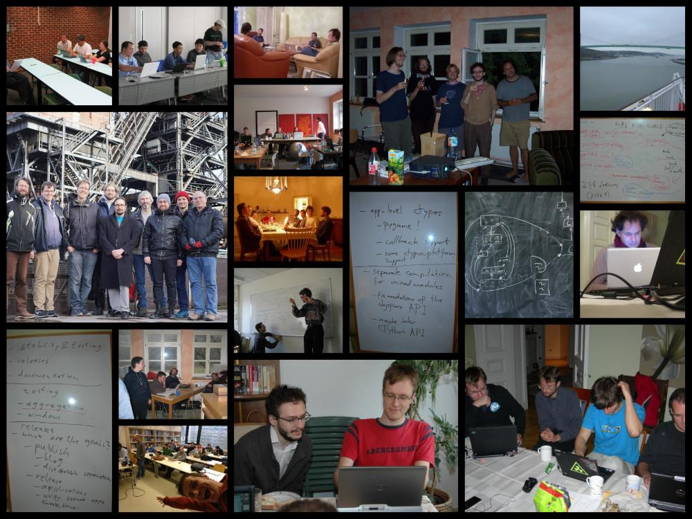
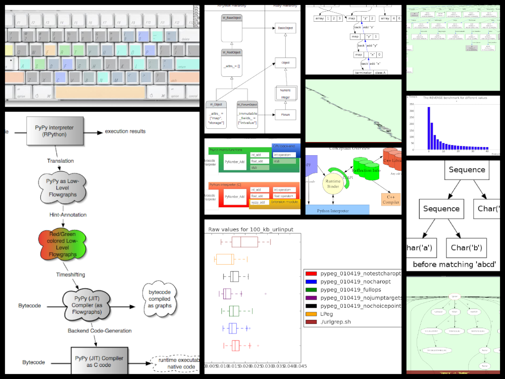
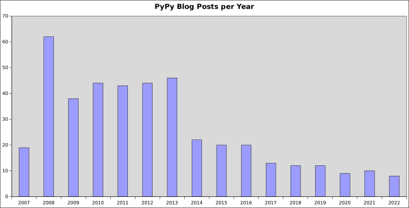

PyPy v7.3.12 release
PyPy v7.3.12: release of python 2.7, 3.9, and 3.10.
The PyPy team is proud to release version 7.3.12 of PyPy. This release includes a new string-to-int algorithm (also appearing in CPython 3.12) that is faster than the older one; support for symlinks in Windows; and our first Python3.10 version.
The release includes three different interpreters:
PyPy2.7, which is an interpreter supporting the syntax and the features of Python 2.7 including the stdlib for CPython 2.7.18+ (the
+is for backported security updates)PyPy3.9, which is an interpreter supporting the syntax and the features of Python 3.9, including the stdlib for CPython 3.9.17.
PyPy3.10, which is an interpreter supporting the syntax and the features of Python 3.10, including the stdlib for CPython 3.10.12. This is our first release of 3.10, but based on past experience we are quite confident in its compatibility with upstream. Of course, we recommend testing your code with this new version before putting it into production. Note it does require at least cython 0.29.35 or cython 3.0.0b3
The interpreters are based on much the same codebase, thus the multiple release. This is a micro release, all APIs are compatible with the other 7.3 releases. It follows after 7.3.11 release on Dec 29, 2022
We recommend updating. You can find links to download the v7.3.12 releases here:
We would like to thank our donors for the continued support of the PyPy project. If PyPy is not quite good enough for your needs, we are available for direct consulting work. If PyPy is helping you out, we would love to hear about it and encourage submissions to our blog via a pull request to https://github.com/pypy/pypy.org
We would also like to thank our contributors and encourage new people to join the project. PyPy has many layers and we need help with all of them: bug fixes, PyPy and RPython documentation improvements, or general help with making RPython's JIT even better. Since the previous release, we have accepted contributions from one new contributor, thanks for pitching in, and welcome to the project!
If you are a python library maintainer and use C-extensions, please consider making a HPy / CFFI / cppyy version of your library that would be performant on PyPy. In any case, both cibuildwheel and the multibuild system support building wheels for PyPy.
What is PyPy?
PyPy is a Python interpreter, a drop-in replacement for CPython 2.7, 3.9 and 3.10. It's fast (PyPy and CPython 3.7.4 performance comparison) due to its integrated tracing JIT compiler.
We also welcome developers of other dynamic languages to see what RPython can do for them.
We provide binary builds for:
x86 machines on most common operating systems (Linux 32/64 bits, Mac OS 64 bits, Windows 64 bits)
64-bit ARM machines running Linux (
aarch64).Apple M1 arm64 machines (
macos_arm64).s390x running Linux
PyPy support Windows 32-bit, Linux PPC64 big- and little-endian, and Linux ARM 32 bit, but does not release binaries. Please reach out to us if you wish to sponsor binary releases for those platforms. Downstream packagers provide binary builds for debian, Fedora, conda, OpenBSD, FreeBSD, Gentoo, and more.
What else is new?
For more information about the 7.3.12 release, see the full changelog.
Please update, and continue to help us make pypy better.
Cheers, The PyPy Team
RPython-based emulator speeds up RISC-V simulation over 15x
In cooperation with RISC-V International, who funded a part of this project, we recently created a workflow to use RPython to take a Sail RISC-V model and automatically create a RISC-V ISA emulator from it, which we call Pydrofoil. The simulator sped up booting a linux emulator from 35 minutes (using the standard Sail-generated emulator in C) to 2 minutes, a speedup of 17.5x. More details about the process are in the RISC-V blog post.
A few take-aways from the project:
While PyPy has shown it can speed up generic python code about 4x, the technology behind PyPy can really shine in other areas.
RPython is malleable and can be molded to many tasks, the RPython meta-JIT is very flexible.
A JIT is well-suited for the problem of emulation, because it can perform dynamic binary translation.
PyPy can solve real world performance problems, even somewhat unusual ones. Please get in touch and let us know how we can help you solve yours!
Repeated string concatenation is quadratic in PyPy (and CPython)
This is a super brief blog post responding to an issue that we got on the PyPy issue tracker. I am moving my response to the blog (with permission of the submitter) to have a post to point to, since it's a problem that comes up with some regularity. It's also documented on our page of differences between PyPy and CPython but I thought an additional blog post might be good.
The issue pointed out that a small program that operates on strings is much slower on PyPy compared to CPython. The program is a solution for 2016's Advent of Code Day 16 and looks like this:
def dragon(a): b = a[::-1].replace('0','r').replace('1','0').replace('r','1') return a+'0'+b def diffstr(a): b = "" for i in range(0,len(a),2): b += ['0','1'][a[i] == a[i+1]] return b def iterdiff(a): b = a while(len(b) % 2 == 0): b = diffstr(b) return b size = 35651584 initstate = '10010000000110000' while(len(initstate) < size): initstate = dragon(initstate) initstate = initstate[:size] print(iterdiff(initstate))
The submitter pointed out, that the program is fast on CPython (~8s on my laptop) and slow (didn't finish) on PyPy.
The reason for the performance difference is that += on strings in a loop
has quadratic complexity in PyPy, which is what diffstr does. To see the
quadraticness, consider that to add a character at the end of the string, the
beginning of the string needs to be copied into a new chunk of memory. If the
loop runs n times, that means there are
1 + 2 + 3 + ... + n = n * (n + 1) // 2
character copies.
Repeated string concatenations are in principle also quadratic in CPython, but CPython has an optimization that makes them sometimes not quadratic, which is what makes this program not too slow in CPython.
In order to fix the problem on PyPy it's best to use a list for the string
parts, which has the right amortized O(1) complexity for .append calls, and
then use str.join after the loop:
def diffstr(a): b = [] for i in range(0,len(a),2): b.append(['0','1'][a[i] == a[i+1]]) return "".join(b)
With this change the program becomes a little bit faster on CPython for me, and on PyPy it stops being quadratic and runs in ~3.5s.
In general, it's best not to rely on the presence of this optimization in CPython either. Sometimes, a small innocent looking changes will break CPython's optimization. E.g. this useless change makes CPython also take ages:
The reason why this change breaks the optimization in CPython is that it only
triggers if the reference count of b is 1, in which case it uses realloc
on the string. The change is unrealistic of course, but you could imagine a
related that keeps an extra reference to b for a sensible reason.
Another situation in which the optimization doesn't work is discussed in this StackOverflow question with an answer by Tim Peters.
It's unlikely that PyPy will fix this. We had a prototype how to do it, but it seems very little "production" code uses += on strings in a loop, and the fix makes the strings implementation quite a bit more complex.
So, in summary, don't use repeated concatenations in a loop!
PyPy v7.3.11 release
PyPy v7.3.11: release of python 2.7, 3.8, and 3.9
The PyPy team is proud to release version 7.3.11 of PyPy. As could be expected,
the first release of macOS arm64 impacted the macOS x86-64 build, so this is
a bug release to restore the ability of macOS users to run PyPy on
macOS < 11.0. It also incorporates the latest CPython stdlib updates
released the day after 7.3.10 went out, and a few more bug fixes. The release
includes three different interpreters:
PyPy2.7, which is an interpreter supporting the syntax and the features of Python 2.7 including the stdlib for CPython 2.7.18+ (the
+is for backported security updates)PyPy3.8, which is an interpreter supporting the syntax and the features of Python 3.8, including the stdlib for CPython 3.8.16. Note we intend to drop support for this version in an upcoming release as soon as we release Pyython 3.10.
PyPy3.9, which is an interpreter supporting the syntax and the features of Python 3.9, including the stdlib for CPython 3.9.16.
The interpreters are based on much the same codebase, thus the multiple release. This is a micro release, all APIs are compatible with the other 7.3 releases and follows quickly on the heals of the 7.3.10 release on Dec 6.
We recommend updating. You can find links to download the v7.3.11 releases here:
We would like to thank our donors for the continued support of the PyPy project. If PyPy is not quite good enough for your needs, we are available for direct consulting work. If PyPy is helping you out, we would love to hear about it and encourage submissions to our blog via a pull request to https://github.com/pypy/pypy.org
We would also like to thank our contributors and encourage new people to join the project. PyPy has many layers and we need help with all of them: bug fixes, PyPy and RPython documentation improvements, or general help with making RPython's JIT even better. Since the previous release, we have accepted contributions from one new contributor, thanks for pitching in, and welcome to the project!
If you are a python library maintainer and use C-extensions, please consider making a HPy / CFFI / cppyy version of your library that would be performant on PyPy. In any case, both cibuildwheel and the multibuild system support building wheels for PyPy.
What is PyPy?
PyPy is a Python interpreter, a drop-in replacement for CPython 2.7, 3.8 and 3.9. It's fast (PyPy and CPython 3.7.4 performance comparison) due to its integrated tracing JIT compiler.
We also welcome developers of other dynamic languages to see what RPython can do for them.
We provide binary builds for:
x86 machines on most common operating systems (Linux 32/64 bits, Mac OS 64 bits, Windows 64 bits)
64-bit ARM machines running Linux (
aarch64).Apple M1 arm64 machines (
macos_arm64).s390x running Linux
PyPy support Windows 32-bit, Linux PPC64 big- and little-endian, and Linux ARM 32 bit, but does not release binaries. Please reach out to us if you wish to sponsor binary releases for those platforms. Downstream packagers provide binary builds for debian, Fedora, conda, OpenBSD, FreeBSD, Gentoo, and more.
What else is new?
For more information about the 7.3.11 release, see the full changelog.
Please update, and continue to help us make pypy better.
Cheers, The PyPy Team
Finding JIT Optimizer Bugs using SMT Solvers and Fuzzing
In this blog post I want to describe a recent bug finding technique that I've added to the PyPy JIT testing infrastructure. This technique uses the Z3 theorem prover to find bugs in the optimizer of PyPy's JIT, in particular its integer operation optimizations. The approach is based on things I have learned from John Regehr's blog (this post is a good first one to read), Twitter, and on his (et al) paper Alive2: Bounded Translation Validation for LLVM. The work was triggered by a recent miscompilation bug my current bachelor student Nico Rittinghaus found.
Background: Python Integers in the PyPy JIT
The optimizer of PyPy's JITs operates on traces, which are linear sequences of instructions with guards. The instructions in the traces operate on different machine-level data types, machine integers, doubles, pointers, bools, etc. In this post we'll be mostly concerned with machine integers.
To given some wider context I'll explain a bit how Python ints in the user code
relate to the types that are used in traces when the PyPy Python implementation
is used.
When PyPy turns a regular Python 3 function into a trace, there is a lot of work
happening in the JIT frontend to try to observe and infer the types that the
Python function concretely uses at runtime. The traces are generated under these
typing assumptions. Therefore, code that uses ints in the Python code can
typically be translated into traces that operate on machine integers. In order
to make sure that the Python integer semantics are upheld, many of the
operations in the traces need to check that the integer results of some
operations still fit into a machine integer. If that is not the case (a rare
situation for most programs), the trace is left via a guard, execution falls
back to the interpreter, and there a big integer representation is chosen for
the too big value (the big integer representation is done via a pointer and
some storage on the heap).
All of this machinery is not going to be too relevant for the rest of the post. For the post it's important to know that trace instructions operate on machine integers and other low-level types, and some of the operations can optionally check whether the results still fit into a machine integer. These trace operations are improved by the optimizer, which tries to transform the trace into one that behaves the same, but is less costly to execute.
Background: Bounds Analysis in PyPy's JIT
The optimizer of PyPy's JIT has an analysis based on abstract interpretation
that tries to find out whether the integer values stored in a variable are
actually not using the full 64 bit (or 32 bit) range, but instead fit into some
smaller range. This means that for every integer variable x in a trace, the
JIT compiler tracks upper and lower bounds of the runtime value of that
variable: a range [a, b] such that for every concrete runtime value v
that gets stored in variable x, a <= v <= b must be true.
a and b start out
as the most general MININT and MAXINT, but sometimes there is extra
information that makes it possible to improve these known bounds, and that is
often useful to optimize the code.
A typical example is that the JIT knows that the length of a string is
non-negative, so for this kind of code: x = len(s) where s is a string,
x gets a range [0, MAXINT] assigned. With this information we could for
example remove a check x + 10 < 0 completely, because it can never be true.
The bounds information is useful for optimization, but the analysis of the bounds is also a source of bugs in the JIT, because the reasoning is often subtle and easy to get wrong in corner cases. We already use a number of testing techniques to try to make sure that it is correct. A simple one is property-based testing using Hypothesis on the operations on bounds. Even though Hypothesis is fantastic, it unfortunately does not catch absolutely all the bugs even if we'd like it too, as we'll see in the next section.
Motivation: A JIT Miscompilation
I am currently supervising a Bachelor thesis by Nico Rittinghaus, who is
extending the integer analysis in the JIT. He'll probably write a separate blog
post about that soon. In the process of his work, the current bounds analysis
code got a lot of scrutiny, and we found out that one of the unit tests of the
bounds analysis was actually incorrect, and the example code in that unit test
was optimized incorrectly. This case of incorrect optimization is not a big deal
for regular Python code, because it involved a "wrapping integer addition
operation", i.e. one where overflowing results just wrap around to negative
values. All the additions and other arithmetic operations that the PyPy Python
frontend generates actually have
overflow checks (to be able to switch to a big integer representation if
needed).
However, it's still possible to trigger the problem with the
__pypy__.intop.int_add API which is a function that exposes wraparound
arithmetic on Python ints.
Here's the miscompilation. The JIT optimizes the following function:
import __pypy__ def wrong(x): a = __pypy__.intop.int_add(x, 10) if a < 15: if x < 6: return 0 return 1 return 2
Into the following code:
Basically the faulty reasoning of the JIT looks like this: if int_add(x, 10) < 15
then it must follow that x < 5, which is stronger than x < 6, so the
second if is always true. This sounds good, but is actually wrong
if the addition + 10 wrapped around. So if x == MAXINT, then
int_add(x, 10) == MININT + 9 < 15. But MAXINT < 5 is not
correct.
Note how the same reasoning with overflow-checking addition is correct! If x +
10 < 15 and the + didn't overflow, then indeed x < 6. And if your
mind bends starting to think about all this, you understand some of the
difficulty of getting the JIT correct in this area.
How could we have avoided this bug?
One exercise I try to do after finding bugs is to reflect on ways that the bug could have been avoided. I think this is particularly important in the JIT, where bugs are potentially really annoying to find and can cause very strange behaviour in basically arbitrary Python code.
It's easy to always answer this question with "try to think more carefully when working", but that approach cannot be relied on in complicated situations, because humans don't concentrate perfectly for long stretches of time.
A situation-specific problem I identified was the bad design of the range analysis API. A range is not just represented by two numbers, instead it's two numbers and two bools that are supposed to represent that some operation did or did not underflow/overflow. The meaning of these bools was quite hard to grasp and easy to get wrong, so probably they should never have been introduced in the first place (and my bugfix indeed removed them).
But in the rest of this blog post I want to talk about another, systematic approach that can be applied to the problem of mis-optimizations of integer operations, and that is done by applying an SMT solver to the problem.
An SMT solver (Satisfyability Modulo Theories) is a tool that can be used to find out whether mathematical formulas are "satisfiable", i.e. whether some chosen set of inputs exists that will make the formulas evaluate to true. SMT solvers are commonly used in a wide range of CS applications including program correctness proofs, program synthesis, etc. The most widely known one is probably Z3 by Microsoft Research which has the nice advantage of coming with an easy-to-use Python binding.
Going into this I basically knew next to nothing about SMT solvers (despite having been embedded in a formal methods research group for years!) so it was an interesting new world to learn about.
As briefly mentioned in the introduction, the approach I took followed a similar (but much more properly executed) one applied to LLVM operations, called Alive2. Krister Waldfridsson has done similar work for GCC recently, described on his blog.
Z3 Proof of Concept
The first thing I did was to try to get Z3 find the above bug, by encoding the input program into an SMT formula by hand and trying to get Z3 to prove the condition that the JIT thinks is always true. The Z3 code for this looks as follows:
from z3 import BitVec, Implies, prove x = BitVec('x', 64) a = x + 10 cond1 = a < 15 cond2 = x < 6 prove(Implies(cond1, cond2))
Here, x is defined to be a bit vector variable of width 64, which is a
datatype that can be used to represent bounded machine integers. Addition on
bit vectors performs wraparound arithmetic, like the __pypy__.intop.int_add
call in the original code. The JIT optimized the second condition away, so
essentially it was convinced that the first condition implies the second one.
The above snippet tries to get Z3 to confirm this.
When run, the above program prints:
counterexample [x = 9223372036854775803]
Which shows the bug. As a small side-note, I thought it was cool that the process of "proving" something in Z3 basically means trying to find an example for the negation of the formula. If no counterexample can be found for the negation, the original formula is true. If the original formula turns out to be false (like here) we get a nice example that shows the problem to go with it.
It's not realistic to hand-translate all the hundreds of unit-tests into Z3 formulas and then ask Z3 to prove the optimizations. Instead, we want to have a program that does this for us.
SMT Checking of the JIT Optimizer
What we want from this program is the following: given an unoptimized trace and its optimized version, we want to use Z3 to check whether the optimized trace behaves identically to the unoptimized one. One question is what "behaves identically" means. What we care about is the outputs of the trace being the same values, no matter how they are computed. Also, for every guard we want to make sure that it fails in identical ways in the optimized and unoptimized versions. A guard is only allowed to be optimized away if it can never fail. The code that comes after a guard can assume that the guard has not failed, because otherwise execution would have left the trace. All of this should be true regardless for the values of the input variables of the trace.
So in order to check that the two traces are behaving identically, we do the following:
We create Z3 variables for every input variable. We use the same input variables both for the unoptimized as well as the optimized trace.
We align the two traces at the corresponding guards. Thankfully the optimizer keeps track of which optimized guard corresponds to which unoptimized input guard.
All the operations before a guard are translated into Z3 formulas, for both versions of the trace.
For two corresponding guards, we ask Z3 to prove that the guard conditions are identical.
For a guard that was optimized away we ask Z3 to prove that the condition is always true.
After a guard, we tell Z3 that from now on it can assume that the guard condition is true.
We repeat this, guard for guard, until we reach the end of the trace. There, we ask Z3 to prove that the output variables in the unoptimized trace and the optimized trace are identical (every trace can return one or many values).
I implemented this, it's not a lot of code, basically a couple of hundred lines of (somewhat hacky) Python code. So far I only support integer operations. Here are some parts of the code to give you a flavor of what this looks like.
This is the code that translates operations into Z3 formulas:
def add_to_solver(self, ops, state): for op in ops: if op.type != 'v': # is it an operation with a result res = self.newvar(op) else: # or does it return void res = None # ... # convert arguments if op.numargs() == 1: arg0 = self.convertarg(op, 0) elif op.numargs() == 2: arg0 = self.convertarg(op, 0) arg1 = self.convertarg(op, 1) # compute results if opname == "int_add": expr = arg0 + arg1 elif opname == "int_sub": expr = arg0 - arg1 elif opname == "int_mul": expr = arg0 * arg1 elif opname == "int_and": expr = arg0 & arg1 elif opname == "int_or": expr = arg0 | arg1 elif opname == "int_xor": expr = arg0 ^ arg1 # ... more operations, some shown below self.solver.add(res == expr)
New Z3 variables are defined by the helper function newvar, which adds the
operation to a dictionary box_to_z3 mapping boxes (=variables) to Z3
variables. Due to the SSA property that traces have, a variable must be defined
before its first use.
Here's what newvar looks like (LONG_BIT is a constant that is either
64 or 32, depending on the target architecture):
def newvar(self, box, repr=None): # ... some logic around making the string representation # somewhat nicer omitted result = z3.BitVec(repr, LONG_BIT) self.box_to_z3[box] = result return result
The convert method turns an operation argument (either a constant or a
variable) into a Z3 formula (either a constant bit vector or an already defined
Z3 variable). convertarg is a helper function that takes an operation, reads
its nth argument and converts it.
def convert(self, box): if isinstance(box, ConstInt): return z3.BitVecVal(box.getint(), LONG_BIT) return self.box_to_z3[box] def convertarg(self, box, arg): return self.convert(box.getarg(arg))
The lookup of variables in box_to_z3 that convert does cannot fail,
because the variable must have been defined before use.
Comparisons return the bit vector 0 or bit vector 1, we use a helper function
cond to turn the Z3 truth value of the comparison into a bit vector:
def cond(self, z3expr): return z3.If(z3expr, TRUEBV, FALSEBV) def add_to_solver(self, ops, state): # ... start as above # more cases elif opname == "int_eq": expr = self.cond(arg0 == arg1) elif opname == "int_ne": expr = self.cond(arg0 != arg1) elif opname == "int_lt": expr = self.cond(arg0 < arg1) elif opname == "int_le": expr = self.cond(arg0 <= arg1) elif opname == "int_gt": expr = self.cond(arg0 > arg1) elif opname == "int_ge": expr = self.cond(arg0 >= arg1) elif opname == "int_is_true": expr = self.cond(arg0 != FALSEBV) elif opname == "uint_lt": expr = self.cond(z3.ULT(arg0, arg1)) elif opname == "uint_le": expr = self.cond(z3.ULE(arg0, arg1)) elif opname == "uint_gt": expr = self.cond(z3.UGT(arg0, arg1)) elif opname == "uint_ge": expr = self.cond(z3.UGE(arg0, arg1)) elif opname == "int_is_zero": expr = self.cond(arg0 == FALSEBV) # ... rest as above
So basically for every trace operation that operates on integers I had to give a translation into Z3 formulas, which is mostly straightforward.
Guard operations get converted into a Z3 boolean by their own helper function, which looks like this:
def guard_to_condition(self, guard, state): opname = guard.getopname() if opname == "guard_true": return self.convertarg(guard, 0) == TRUEBV elif opname == "guard_false": return self.convertarg(guard, 0) == FALSEBV elif opname == "guard_value": return self.convertarg(guard, 0) == self.convertarg(guard, 1) # ... some more exist, shown below
Some operations are a bit trickier. An important example in the context of this blog post are integer operations that check for overflow. The overflow operations return a result, but also a boolean whether the operation overflowed or not.
def add_to_solver(self, ops, state): # ... more cases elif opname == "int_add_ovf": expr = arg0 + arg1 m = z3.SignExt(LONG_BIT, arg0) + z3.SignExt(LONG_BIT, arg1) state.no_ovf = m == z3.SignExt(LONG_BIT, expr) elif opname == "int_sub_ovf": expr = arg0 - arg1 m = z3.SignExt(LONG_BIT, arg0) - z3.SignExt(LONG_BIT, arg1) state.no_ovf = m == z3.SignExt(LONG_BIT, expr) elif opname == "int_mul_ovf": expr = arg0 * arg1 m = z3.SignExt(LONG_BIT, arg0) * z3.SignExt(LONG_BIT, arg1) state.no_ovf = m == z3.SignExt(LONG_BIT, expr) # ...
The boolean is computed by comparing the result of the bit vector operation with the result of converting the input bit vectors into an abstract (arbitrary precision) integer and the result back to bit vectors. Let's go through the addition case step by step, the other cases work analogously.
The addition in the first elif that computes expr is an addition on bit
vectors, therefore it is performing wraparound arithmetic.
z3.SignExt(LONG_BIT, arg0) sign-extends arg0 from a bit vector of
LONG_BIT bits to an abstract, arbitrary precision integer. The addition in
the second line is therefore an addition between abstract integers, so it will
never overflow and just compute the correct result as an integer.
The condition to check for overflow is now: if the results of the two different
ways to do the addition are the same, then overflow did not occur. So in order
to compute state.no_ovf in the addition case the
code converts the result of the bit vector wraparound addition to
an abstract integer (using SignExt again), and then compares that to the integer
result.
This boolean can then be checked by the guard operations guard_no_overflow
and guard_overflow.
Finding the Bug, Again
Let's actually make all of this more concrete by applying it to the trace of our original bug. The input trace and the incorrectly optimized trace for that look like this (differences highlighted):
# input # optimized [i0] [i0] i1 = int_add(i0, 10) i1 = int_add(i0, 10) i2 = int_lt(i1, 15) i2 = int_lt(i1, 15) guard_true(i2) guard_true(i2) i3 = int_lt(i0, 6) jump(0) guard_true(i3) jump(0)
Note that the trace represents just one of the paths through the control flow graph of the original function, which is typical for tracing JITs (the other paths could incrementally get added later).
The first guards in both these traces correspond to each other, so the first chunks to check are the first three operations (lines 1-4). Those operations don't get changed by the optimizer at all.
These two identical traces get translated to the following Z3 formulas:
i1unoptimized == input_i0 + 10 i2unoptimized == If(i1unoptimized < 15, 1, 0) i1optimized == input_i0 + 10 i2optimized == If(i1optimized < 15, 1, 0)
To check that the two corresponding guards are the same, the solver is asked to
prove that (i2unoptimized == 1) == (i2optimized == 1). This is
correct, because the formulas for i2unoptimized and i2optimized are
completely identical.
After checking that the guards behave the same, we add the knowledge to the solver that the guards passed. So the Z3 formulas become:
i1unoptimized == input_i0 + 10 i2unoptimized == If(i1unoptimized < 15, 1, 0) i1optimized == input_i0 + 10 i2optimized == If(i1optimized < 15, 1, 0) i1optimized == 1 i2optimized == 1
Now we continue with the remaining operations of the two traces (lines 6-8).
We start by adding the int_lt operation in the unoptimized trace to the Z3
formulas:
Because the second guard was optimized away, we need to ask Z3 to prove that
i3unoptimized == 1 is always true, which fails and gives the following
counterexample:
input_i0 = 9223372036854775800 i1unoptimized = 9223372036854775810 i2unoptimized = 0 i1optimized = 9223372036854775810 i2optimized = 1 i3unoptimized = 0
Thus demonstrating the bug. The fact that the Z3-based equivalence check also managed to find the original motivating bug without manually translating it to a formula is a good confirmation that the approach works.
Second bug
So with this code I applied the Z3-based equivalence check to all our optimizer
unit tests. In addition to the bug we've been discussing the whole post, it also
found another buggy test! I had found it too by hand by staring at all the tests
in the process of writing all the Z3 infrastructure, but it was still a good
confirmation that the process worked. This bug was in the range analysis for
int_neg, integer negation. It failed to account that -MININT == MININT
and therefore did a mis-optimization along the following lines:
import __pypy__ def wrong(x): a = __pypy__.intop.int_sub(0, x) if a < 0: if x > 0: return 0 return 1 return 2
Which was wrongly optimized into:
This is wrong precisely for x == MININT.
Generating Random Traces
These two bugs were the only two that the Z3 checker found for existing unit tests. To try to find some more bugs I combined PyPy's existing random trace generator with the Z3 optimization checker. The random trace generator has so far been mostly used to find bugs in the machine code backends, particularly also in the register allocator. So far we haven't used it with our optimizer, but my experiments show that we should have!
I'm going to describe a little bit how the random trace generator works. It's actually not that complicated, but there's one neat trick to it.
The basic idea is straightforward, it starts out with an empty trace with a random number of input variables. Then it adds some number of operations to the trace, either regular operations or guards. Every operation takes already existing variables as input.
The neat trick is that our random trace generator keeps a concrete random example value for every one of the input variables, and an example result for every operation. In this way, it is possible to generate guards that are consistent with the example values to ensure that running the trace to its end is possible with at least one set of values.
Here's an example random trace that is generated, together with the random example inputs and the results of every operation at the end of every line:
[i0, i1, i2, i3, i4, i5] # example values: 9, 11, -8, -95, 46, 57 i6 = int_add_ovf(i3, i0) # -86 guard_no_overflow() i7 = int_sub(i2, -35/ci) # 27 i8 = uint_ge(i3, i5) # 1 guard_true(i8) i9 = int_lt(i7, i8) # 0 i10 = int_mul_ovf(34/ci, i7) # 918 guard_no_overflow() i11 = int_and(i10, 63/ci) # 22 i12 = int_rshift(i3, i11) # -1 i13 = int_is_zero(i7) # 0 i14 = int_is_true(i13) # 0 guard_false(i13) i15 = int_lt(i8, i4) # 1 i16 = int_and(i6, i0) # 8 i17 = uint_ge(i6, -6/ci) # 0 finish()
Note how every guard generated is true for the example values.
I have been running this combination of random trace generation and Z3 checking for many nights and it has found some bugs, which I'll describe in the next section. It should probably be run for a lot longer, but still a useful exercise already.
In this mode, I'm giving every Z3 call a time limit to make sure that the random tests don't just take arbitrarily long. This means that asking Z3 to prove something can have three outcomes, either it's proved, or Z3 finds a counterexample, or Z3 times out.
Bugs Found
In addition to the two bugs I've already described, I'll briefly list the additional bugs that were found by optimizing random traces and then trying to prove the equivalence with Z3.
Most of the bugs were actually identified by optimizing random traces alone, not by the Z3 component. They manifested as assert failures in the JIT compiler.
The JIT concluded after
12 == int_mul(x, 12)thatx == 1, which is incorrect if overflow occurred (a counterexample is0x8000000000000001).An amusing bug, where from
0 == int_lshift(0x1000000000000000, x)withx <= 0 <= 15, the JIT concluded that0x1000000000000000 == 0, triggering an assert. This wrong conclusion was again caused by not taking the possibility of overflow into account.A corner case in an optimization for chained integer additions with a constant, where in complex enough expressions, the wrong IR API was used (which works correctly in simple cases). Again, this triggered an assert.
This shows that we should have been fuzzing our JIT optimizer already (not a surprising observation in hindsight, fuzz all the things!).
Thankfully, there was also one further bug that really failed in the Z3 verifier. It's a bug in common subexpression elimination / arithmetic simplification, which again does not take overflow correctly into account.
The buggy trace looks like this (unfortunately it's not easily possible to show this bug in Python code).
This was optimized to:
Which is incorrect, because the guard can fail given the right inputs. But the optimizer concluded that the subtraction is safe, because its the inverse of an earlier addition, not taking into account that this earlier addition can have overflowed.
Note that a related optimization is actually correct. Given this code:
It can be optimized to:
Future Work and Conclusion
In the current form the Z3 checker is only a start, even though it has already been concretely useful. There are various directions into which we could extend it. In addition to generate random tests completely from scratch, we could also start from the existing manually written unit-tests and randomly mutate those.
I also want to extend the Z3 checker with support more operations, heap operations in particular (but it's not quite clear to me how to model garbage collection).
I also want to try to switch the code away from the Z3 API and use the more general smtlib interface directly, in order to be able to use other SMT checkers than Z3, eg CVC4.
But all in all this was a fun and not too hard way to find a bunch of bugs in our optimizer! And the infrastructure is now in place, which means that we run some random test cases every time we execute our tests. This is going to be particularly useful when we do further work on the integer reasoning of the JIT (like Nico is doing, for example). As of time of writing of this post, all the bugs mentioned have been fixed and the Z3 code has landed on the default branch and runs as part of PyPy's CI infrastructure.
Acknowledgements
Thanks to Saam Barati, Max Bernstein, Joshua Schmidt and Martin Berger, for great feedback on drafts of this post!
PyPy v7.3.10 release
PyPy v7.3.10: release of python 2.7, 3.8, and 3.9
The PyPy team is proud to release version 7.3.10 of PyPy. We have some nice speedups and bugfixes we wish to share. The release includes three different interpreters:
PyPy2.7, which is an interpreter supporting the syntax and the features of Python 2.7 including the stdlib for CPython 2.7.18+ (the
+is for backported security updates)PyPy3.8, which is an interpreter supporting the syntax and the features of Python 3.8, including the stdlib for CPython 3.8.15.
PyPy3.9, which is an interpreter supporting the syntax and the features of Python 3.9, including the stdlib for CPython 3.9.15. We have gained confidence in the stability of this version, and are removing the "beta" label.
The interpreters are based on much the same codebase, thus the multiple release. This is a micro release, all APIs are compatible with the other 7.3 releases. Highlights of the release, since the release of 7.3.9 in March 2022 include:
A release of Apple Silicon M1 arm64 versions. This work was sponsored by an anonymous donor and is tested on our buildbots.
Many improvements to the basic interpreter to make it 15-20% faster
The conda-forge community has built over 1000 packages for PyPy3.8 and 3.9, making it easier than ever to use PyPy.
Update the packaged OpenSSL to 1.1.1s, sqlite3 to 3.39.4, and apply applicable security fixes from CPython 3.9.15 to PyPy2.7
Update the HPy backend in PyPy3.8 and PyPy3.9 to 0.0.4
We recommend updating. You can find links to download the v7.3.10 releases here:
We would like to thank our donors for the continued support of the PyPy project. If PyPy is not quite good enough for your needs, we are available for direct consulting work. If PyPy is helping you out, we would love to hear about it and encourage submissions to our blog via a pull request to https://github.com/pypy/pypy.org
We would also like to thank our contributors and encourage new people to join the project. PyPy has many layers and we need help with all of them: bug fixes, PyPy and RPython documentation improvements, or general help with making RPython's JIT even better. Since the previous release, we have accepted contributions from five new contributors, thanks for pitching in, and welcome to the project!
If you are a python library maintainer and use C-extensions, please consider making a HPy / CFFI / cppyy version of your library that would be performant on PyPy. In any case, both cibuildwheel and the multibuild system support building wheels for PyPy.
What is PyPy?
PyPy is a Python interpreter, a drop-in replacement for CPython 2.7, 3.8 and 3.9. It's fast (PyPy and CPython 3.7.4 performance comparison) due to its integrated tracing JIT compiler.
We also welcome developers of other dynamic languages to see what RPython can do for them.
We provide binary builds for:
x86 machines on most common operating systems (Linux 32/64 bits, Mac OS 64 bits, Windows 64 bits)
64-bit ARM machines running Linux (
aarch64).Apple M1 arm64 machines (
macos_arm64).s390x running Linux
PyPy support Windows 32-bit, Linux PPC64 big- and little-endian, and Linux ARM 32 bit, but does not release binaries. Please reach out to us if you wish to sponsor binary releases for those platforms. Downstream packagers provide binary builds for debian, Fedora, conda, OpenBSD, FreeBSD, Gentoo, and more.
What else is new?
For more information about the 7.3.10 release, see the full changelog.
Please update, and continue to help us make pypy better.
Cheers, The PyPy Team
PyPy and conda-forge
You can use PyPy as your python interpreter in a conda environment. The conda-forge team has graciously provided this service.
The conda-forge tips-and-tricks page says:
The conda-forge channel supports creating and installing packages into environments using the PyPy interpreter. Many packages are already available. You need to enable the conda-forge channel and use the pypy identifier when creating your environment:
$ conda create -c conda-forge -n my-pypy-env pypy python=3.8 $ conda activate my-pypy-env
Currently supported python versions are 3.8 and 3.9. Support for pypy3.7 has been dropped. While you can still create a python 3.7 environment, you you will not be getting updates as new package versions are released (including pypy itself).
if you are using defaults as a low priority channel, then you need to use strict channel priority as the metadata in defaults has not been patched yet which allows cpython extension packages to be installed alongside pypy.
$ conda config --set channel_priority strict
The work required some out-of-the-box thinking on the part of conda-forge since
they needed to add the idea of a pypy identifier to the python version and
the whole conda team has been very supportive of the effort needed. Binary
packages are on offer for the usual platforms:
-
x86_64windows, macos, linux -
ppc64leandaarch64linux.
There are currently over 1000 packages available for download via the conda-forge channel, and more are being added as the kind package maintainers work around various differences between CPython and PyPy. Please let us know if your favorite package is not supported.
The PyPy Blog Turns 15 Years
Exactly 15 years ago today we wrote the first blog post on the PyPy blog! Over the years, we have written 423 posts, from the shortest to the longest. In 2021 we moved from blogger to our own domain.
The topics over the years varied widely, we published release announcements; roadmaps; JIT, GC and STM updates; benchmarks; sprint, trip and conference reports; technical deep dives; case studies; april fool's jokes; research projects; other languages using RPython; finished PhD Bachelor and Master, theses; pictures:
{kind=link}
and diagrams:
{kind=link}
Quite a number of blog posts were very early iterations of papers that we published later, here are a few that I can remember:
Applying a Tracing JIT to an Interpreter became Tracing the meta-level: PyPy's tracing JIT compiler at ICOOOLPS 2009, by far our most successful paper.
Escape Analysis in PyPy's JIT became Allocation removal by partial evaluation in a tracing JIT at PEPM 2010.
Controlling the Tracing of an Interpreter With Hints was a draft of the paper Runtime feedback in a meta-tracing JIT for efficient dynamic languages at ICOOOLPS 2011
Using Escape Analysis Across Loop Boundaries for Specialization was the nucleus of Loop-aware optimizations in PyPy's tracing JIT at DLS 2012.
List Strategies was eventually turned into the paper Storage strategies for collections in dynamically typed languages at OOPSLA 2013.
Greatest Hits
In terms of visitors, the top five posts on the old blog were – on the new blog we simply don't have stats (yet?):
The number of posts per year developed like this:
The most prolific authors are:
Several blog posts have made it to the Hacker News front page, three of them to number 1:
Personal Favourites
While looking through the posts, there were a few that stood out to me in some way, so here's a subjective list of ones that I had fun looking at again:
2009: PyPy gets a new compiler
2012: Architecture of Cppyy
2013: 10 years of PyPy
2014: PyPy IO Improvements
2016: PyPy Enterprise Edition
We'd like to thank our authors, guest authors, commenters, users and readers who have stuck with us through one and a half decades! If there's any particular topics you would like to read something about, or any guest posts you'd like to write, let us know!
Allocation Removal in the Toy Optimizer
One of the workhorse optimization of RPython's tracing JIT is allocation removal, which removes short-lived object allocation from traces. Many Python programs create a lot of objects that only live for a short time, and whose lifespan is fully predictable (common examples are integer and float boxes, but also tuples, frames, intermediate string results, etc). Allocation removal will try (and very often succeed) to remove these allocations from traces. In this blog post I want to show a toy version of how allocation removal is implemented.
In the previous blog post of this series I showed the complete code for writing a toy one-pass optimizer that does constant folding, common subexpression elimination and strength reduction. In this second post, I want to use allocation removal as a more advanced optimization pass. The basic optimization framework is the same, we will use the same datastructures for intermediate representation and also keep using the same union find data structure to store equivalences between IR operations. Here's the infrastructure code from the last post:
import pytest from typing import Optional, Any class Value: def find(self): raise NotImplementedError("abstract") def _set_forwarded(self, value): raise NotImplementedError("abstract") class Operation(Value): def __init__( self, name: str, args: list[Value] ): self.name = name self.args = args self.forwarded = None self.info = None def __repr__(self): return ( f"Operation({self.name}, " f"{self.args}, {self.forwarded}, " f"{self.info})" ) def find(self) -> Value: op = self while isinstance(op, Operation): next = op.forwarded if next is None: return op op = next return op def arg(self, index): return self.args[index].find() def make_equal_to(self, value: Value): self.find()._set_forwarded(value) def _set_forwarded(self, value: Value): self.forwarded = value class Constant(Value): def __init__(self, value: Any): self.value = value def __repr__(self): return f"Constant({self.value})" def find(self): return self def _set_forwarded(self, value: Value): assert ( isinstance(value, Constant) and value.value == self.value ) class Block(list): def opbuilder(opname): def wraparg(arg): if not isinstance(arg, Value): arg = Constant(arg) return arg def build(self, *args): # construct an Operation, wrap the # arguments in Constants if necessary op = Operation(opname, [wraparg(arg) for arg in args]) # add it to self, the basic block self.append(op) return op return build # a bunch of operations we support add = opbuilder("add") mul = opbuilder("mul") getarg = opbuilder("getarg") dummy = opbuilder("dummy") lshift = opbuilder("lshift") # some new one for this post alloc = opbuilder("alloc") load = opbuilder("load") store = opbuilder("store") print = opbuilder("print") def bb_to_str(bb: Block, varprefix: str = "var"): def arg_to_str(arg: Value): if isinstance(arg, Constant): return str(arg.value) else: return varnames[arg] varnames = {} res = [] for index, op in enumerate(bb): var = f"{varprefix}{index}" varnames[op] = var arguments = ", ".join( arg_to_str(op.arg(i)) for i in range(len(op.args)) ) strop = f"{var} = {op.name}({arguments})" res.append(strop) return "\n".join(res)
There are two changes to the code from the last post: Operation instances
have a new .info field, which is set to None by default. We will learn
how the info field is used a bit further down. Also, we define some new
operations.
Interpreter
In this post we will mainly concern ourselves with optimizing
programs that allocate memory. We assume that our language is garbage collected
and memory safe. The new operations that we will optimize are alloc
(allocates some new object), store (stores a value into a fixed field of an
object), load (loads the value from a field in the object).
We are leaving out a lot of details of a "real" system here, usually an
alloc operation would get some extra information, for example the type of
the freshly allocated object or at least its size. load and store would
typically have some kind of field offset and maybe some information about the
field's type
Here's a simple program that uses these operations:
var0 = getarg(0) obj0 = alloc() store(obj0, 0, var0) var1 = load(obj0, 0) print(var1)
The code allocates a new object obj0, stores var0 into field 0 of
the object, the loads the same field and prints the result of the load.
Before we get started in writing the optimizer for these operations, let's try
to understand the semantics of the new operations a bit better. To do this, we
can sketch a small interpreter for basic blocks, supporting only getarg,
alloc, store, load, print:
def test_interpret(): bb = Block() var0 = bb.getarg(0) obj = bb.alloc() sto = bb.store(obj, 0, var0) var1 = bb.load(obj, 0) bb.print(var1) assert interpret(bb, 17) == 17 class Object: def __init__(self): self.contents: dict[int, Any] = {} def store(self, idx : int, value : Any): self.contents[idx] = value def load(self, idx : int): return self.contents[idx] def get_num(op, index=1): assert isinstance(op.arg(index), Constant) return op.arg(index).value def interpret(bb : Block, *args : tuple[Any]): def argval(op, i): arg = op.arg(i) if isinstance(arg, Constant): return arg.value else: assert isinstance(arg, Operation) return arg.info for index, op in enumerate(bb): if op.name == "getarg": res = args[get_num(op, 0)] elif op.name == "alloc": res = Object() elif op.name == "load": fieldnum = get_num(op) res = argval(op, 0).load(fieldnum) elif op.name == "store": obj = argval(op, 0) fieldnum = get_num(op) fieldvalue = argval(op, 2) obj.store(fieldnum, fieldvalue) # no result, only side effect continue elif op.name == "print": res = argval(op, 0) print(res) return res else: raise NotImplementedError( f"{op.name} not supported") op.info = res
The interpreter walks the operations of a block, executing each one in turn. It
uses the info field to store the result of each already executed
Operation. In this interpreter sketch we stop at the first print that
we execute and return its argument for the simple but bad reason that it makes
test_interpret easier to write.
Objects in the interpreter are represented using a class Object, which
stores the object's field into a Python dictionary. As written above, this is a
simplification, in a real system the alloc operation might for example take
some kind of type as an argument, that describes which kinds of fields an
object has and how they are laid out in memory, which would allow more
efficient storage of the content. But we don't want to care about this level of
detail in the post, so using a dict in the interpreter is good enough.
Version 1: Naive Attempt
In many programs, some allocated objects don't live for very long and have a completely predictable lifetime. They get allocated, used for a while, and then there is no way to reference them any more, so the garbage collector will reclaim them. The very first example block had such an allocation:
var0 = getarg(0) obj0 = alloc() store(obj0, 0, var0) var1 = load(obj0, 0) print(var1)
Here obj0 is written to, then read from, and then it's no longer used. We
want to optimize such programs to remove this alloc operation. The optimized
version of this program would look like this:
var0 = getarg(0) print(var0)
The alloc, store and load operations have been completely removed.
This is a pretty important optimizations for PyPy's JIT: Allocations, memory
reads and writes are quite costly and occur a lot in Python, so getting rid
of as many of them as possible is instrumental for performance.
Implementing the optimization is not a lot of code! However, understanding all the corner cases of the optimization and making sure that the resulting program behave correctly is not completely trivial. Therefore we will develop the optimization step by step, in a test driven fashion: I will start each section with a new test that shows a bug in the version of the optimization that we have so far.
Let's start in a really naive way. Here's the first test we would like to pass, using the example program above:
def test_remove_unused_allocation(): bb = Block() var0 = bb.getarg(0) obj = bb.alloc() sto = bb.store(obj, 0, var0) var1 = bb.load(obj, 0) bb.print(var1) opt_bb = optimize_alloc_removal(bb) # the virtual object looks like this: # obj # ┌──────────┐ # │ 0: var0 │ # └──────────┘ assert bb_to_str(opt_bb, "optvar") == """\ optvar0 = getarg(0) optvar1 = print(optvar0)"""
We will define a class VirtualObject that is basically identical to
Object above. But it will not be used by the interpreter, instead we will
use it during optimization.
class VirtualObject: def __init__(self): self.contents: dict[int, Value] = {} def store(self, idx, value): self.contents[idx] = value def load(self, idx): return self.contents[idx]
The structure of the optimizer is going to be like those in the first blog post. The optimizer makes a single pass over all operations. It removes some and emits others.
This first version of the allocation removal optimizer is going to be extremely
optimistic. It simply assumes that all the allocations in the program can be
optimized away. That is not realistic in practice. We will have to
refine this approach later, but it's a good way to start. That means whenever
the optimizer sees an alloc operation, it removes it and creates a
VirtualObject object which stores the information that is known during
optimization about the result of the alloc. Like in the interpreter, the
VirtualObject is stored in the .info field of the Operation instance
that represents the alloc.
When the optimizer sees a store operation, it will also remove it and
instead execute the store by calling the VirtualObject.store method.
Here is one important difference between the interpreter and the optimizer: In
the interpreter, the values that were stored into an Object (and thus
put into the object's .contents dictionary) were runtime values, for
example integers or other objects. In the optimizer however, the
fields of the VirtualObject store Value instances, either Constant
instances or Operation instances.
When the optimizer sees a load operation, it also removes it, and replaces
the load with the Operation (or Constant) that is stored in the
VirtualObject at that point:
def optimize_alloc_removal(bb): opt_bb = Block() for op in bb: if op.name == "alloc": op.info = VirtualObject() continue if op.name == "load": info = op.arg(0).info field = get_num(op) op.make_equal_to(info.load(field)) continue if op.name == "store": info = op.arg(0).info field = get_num(op) info.store(field, op.arg(2)) continue opt_bb.append(op) return opt_bb
This is the first version of the optimization. It doesn't handle all kinds of difficult cases, and we'll have to do something about its optimism. But, already in this minimalistic form, we can write a slightly more complicated test with two allocations, one object pointing to the other. It works correctly too, both allocations are removed:
def test_remove_two_allocations(): bb = Block() var0 = bb.getarg(0) obj0 = bb.alloc() sto1 = bb.store(obj0, 0, var0) obj1 = bb.alloc() sto2 = bb.store(obj1, 0, obj0) var1 = bb.load(obj1, 0) var2 = bb.load(var1, 0) bb.print(var2) # the virtual objects look like this: # obj0 # ┌──────┐ # │ 0: ╷ │ # └────┼─┘ # │ # ▼ # obj1 # ┌─────────┐ # │ 0: var0 │ # └─────────┘ # therefore # var1 is the same as obj0 # var2 is the same as var0 opt_bb = optimize_alloc_removal(bb) assert bb_to_str(opt_bb, "optvar") == """\ optvar0 = getarg(0) optvar1 = print(optvar0)"""
Version 2: Re-Materializing Allocations
To make it easier to talk about how the optimizer operates, let's introduce
some terminology. As already seen by the choice
of the class name VirtualObject, we will call an object virtual if the
optimizer has optimized away the alloc operation that creates the object.
Other objects are equivalently not virtual, for example those that have
existed before we enter the current code block.
The first problem that we need to fix is the assumption that every allocation can be removed. So far we only looked at small programs where every allocation could be removed, or equivalently, where every object is virtual. A program that creates virtual objects, stores into and loads from them, and then forgets the objects. In this simple case removing the allocations is fine. As we saw in the previous section, it's also fine to have a virtual object reference another virtual, both allocations can be removed.
What are the cases were we can't remove an allocation? The first version of the optimizer simply assumed that every allocation can be removed. This can't work. We will replace this assumption with the following simple heuristic:
If a reference to a virtual object a is stored into an object b
that is not virtual, then a will also stop being virtual. If an object a
that was virtual stops being virtual, we say that it escapes. ¹
The simplest test case for this happening looks like this:
def test_materialize(): bb = Block() var0 = bb.getarg(0) obj = bb.alloc() sto = bb.store(var0, 0, obj) opt_bb = optimize_alloc_removal(bb) # obj is virtual, without any fields # ┌───────┐ # │ empty │ # └───────┘ # then we store a reference to obj into # field 0 of var0. Since var0 is not virtual, # obj escapes, so we have to put it back # into the optimized basic block assert bb_to_str(opt_bb, "optvar") == """\ optvar0 = getarg(0) optvar1 = alloc() optvar2 = store(optvar0, 0, optvar1)""" # so far, fails like this: # the line: # info.store(field, op.arg(2)) # produces an AttributeError because info # is None
If the optimizer reaches a point where a virtual object escapes (like the
store operation in the test), the optimizer has already removed the alloc
operation that created the virtual object. If the object escapes, we don't want
to go back in the operations list and re-insert the alloc operation, that
sounds potentially very complicated. Instead, we re-insert the alloc
operation that will recreate the virtual object at the point of escape using a
helper function materialize.
def materialize(opt_bb, value: Operation) -> None: assert not isinstance(value, Constant) assert isinstance(value, Operation) info = value.info assert isinstance(info, VirtualObject) assert value.name == "alloc" # put the alloc operation back into the trace opt_bb.append(value)
I've added a number of fairly strong assertions to materialize to encode our
current assumptions about the situations in which it expects to be called. We
will remove some of them later as we generalize the code.
Now that we have materialize we need to change optimize_alloc_removal to
recognize the case of storing a virtual object into a non-virtual one. We can
recognize Operation instances that produced a virtual object by looking at
their .info field. If it is None, the object is not virtual, otherwise
it is. If we store something into a virtual object, we leave the code as above.
If we store a virtual object into an object that is not virtual, we will first
materialize the virtual object, and then emit the store.
def optimize_alloc_removal(bb): opt_bb = Block() for op in bb: if op.name == "alloc": op.info = VirtualObject() continue if op.name == "load": info = op.arg(0).info field = get_num(op) op.make_equal_to(info.load(field)) continue if op.name == "store": info = op.arg(0).info if info: # virtual field = get_num(op) info.store(field, op.arg(2)) continue else: # not virtual # first materialize the # right hand side materialize(opt_bb, op.arg(2)) # then emit the store via # the general path below opt_bb.append(op) return opt_bb
This is the general idea, and it is enough to pass test_materialize. But of
course there are still a number of further problems that we now need to solve.
Version 3: Don't Materialize Twice
The first problem is the fact that after we materialize a virtual object, it is
no longer virtual. So if it escapes a second time, it should not be
materialized a second time. A test for that case could simply repeat the
store operation:
def test_dont_materialize_twice(): # obj is again an empty virtual object, # and we store it into var0 *twice*. # this should only materialize it once bb = Block() var0 = bb.getarg(0) obj = bb.alloc() sto0 = bb.store(var0, 0, obj) sto1 = bb.store(var0, 0, obj) opt_bb = optimize_alloc_removal(bb) assert bb_to_str(opt_bb, "optvar") == """\ optvar0 = getarg(0) optvar1 = alloc() optvar2 = store(optvar0, 0, optvar1) optvar3 = store(optvar0, 0, optvar1)""" # fails so far: the operations that we get # at the moment are: # optvar0 = getarg(0) # optvar1 = alloc() # optvar2 = store(optvar0, 0, optvar1) # optvar3 = alloc() # optvar4 = store(optvar0, 0, optvar3) # ie the object is materialized twice, # which is incorrect
We solve the problem by setting the .info field of an object that we
materialize to None to mark it as no longer being virtual.
def materialize(opt_bb, value: Operation) -> None: assert not isinstance(value, Constant) assert isinstance(value, Operation) info = value.info if info is None: return # already materialized assert value.name == "alloc" # put the alloc operation back into the trace opt_bb.append(value) # but only once value.info = None # optimize_alloc_removal unchanged
This fixes the problem, only one alloc is created. This fix also allows
another test case to pass, one where we store a non-virtual into another
non-virtual, code which we cannot optimize at all:
def test_materialize_non_virtuals(): # in this example we store a non-virtual var1 # into another non-virtual var0 # this should just lead to no optimization at # all bb = Block() var0 = bb.getarg(0) var1 = bb.getarg(1) sto = bb.store(var0, 0, var1) opt_bb = optimize_alloc_removal(bb) assert bb_to_str(opt_bb, "optvar") == """\ optvar0 = getarg(0) optvar1 = getarg(1) optvar2 = store(optvar0, 0, optvar1)"""
Version 4: Materialization of Constants
Another straightforward extension is to support materializing constants. A constant is never virtual, so materializing it should do nothing.
def test_materialization_constants(): # in this example we store the constant 17 # into the non-virtual var0 # again, this will not be optimized bb = Block() var0 = bb.getarg(0) sto = bb.store(var0, 0, 17) opt_bb = optimize_alloc_removal(bb) # the previous line fails so far, triggering # the assert: # assert not isinstance(value, Constant) # in materialize assert bb_to_str(opt_bb, "optvar") == """\ optvar0 = getarg(0) optvar1 = store(optvar0, 0, 17)"""
To implement that case, we check for value being a constant and return
early:
def materialize(opt_bb, value: Operation) -> None: if isinstance(value, Constant): return assert isinstance(value, Operation) info = value.info if info is None: return # already materialized assert value.name == "alloc" # put the alloc operation back into the trace opt_bb.append(value) # but only once value.info = None # optimize_alloc_removal unchanged
Version 5: Materializing Fields
Now we need to solve a more difficult problem. So far, the virtual objects that we have materialized have all been empty, meaning they didn't have any fields written to at the point of materialization. Let's write a test for this:
def test_materialize_fields(): bb = Block() var0 = bb.getarg(0) var1 = bb.getarg(1) obj = bb.alloc() contents0 = bb.store(obj, 0, 8) contents1 = bb.store(obj, 1, var1) sto = bb.store(var0, 0, obj) # the virtual obj looks like this # obj # ┌──────┬──────────┐ # │ 0: 8 │ 1: var1 │ # └──────┴──────────┘ # then it needs to be materialized # this is the first example where a virtual # object that we want to materialize has any # content and is not just an empty object opt_bb = optimize_alloc_removal(bb) assert bb_to_str(opt_bb, "optvar") == """\ optvar0 = getarg(0) optvar1 = getarg(1) optvar2 = alloc() optvar3 = store(optvar2, 0, 8) optvar4 = store(optvar2, 1, optvar1) optvar5 = store(optvar0, 0, optvar2)""" # fails so far! the operations we get # at the moment are: # optvar0 = getarg(0) # optvar1 = getarg(1) # optvar2 = alloc() # optvar3 = store(optvar0, 0, optvar2) # which is wrong, because the store operations # into optvar1 got lost
To fix this problem, we need to re-create a store operation for every
element of the .contents dictionary of the virtual object we are
materializing. ²
def materialize(opt_bb, value: Operation) -> None: if isinstance(value, Constant): return assert isinstance(value, Operation) info = value.info if info is None: return # already materialized assert value.name == "alloc" # put the alloc operation back into the trace opt_bb.append(value) # put the content back for idx, val in info.contents.items(): # re-create store operation opt_bb.store(value, idx, val) # only materialize once value.info = None # optimize_alloc_removal unchanged
This is enough to pass the test.
Version 6: Recursive Materialization
In the above example, the fields of the virtual objects contained only constants or non-virtual objects. However, we could have a situation where a whole tree of virtual objects is built, and then the root of the tree escapes. This makes it necessary to escape the whole tree. Let's write a test for a small tree of two virtual objects:
def test_materialize_chained_objects(): bb = Block() var0 = bb.getarg(0) obj0 = bb.alloc() obj1 = bb.alloc() contents = bb.store(obj0, 0, obj1) const = bb.store(obj1, 0, 1337) sto = bb.store(var0, 0, obj0) # obj0 # ┌──────┐ # │ 0: ╷ │ # └────┼─┘ # │ # ▼ # obj1 # ┌─────────┐ # │ 0: 1337 │ # └─────────┘ # now obj0 escapes opt_bb = optimize_alloc_removal(bb) assert bb_to_str(opt_bb, "optvar") == """\ optvar0 = getarg(0) optvar1 = alloc() optvar2 = alloc() optvar3 = store(optvar2, 0, 1337) optvar4 = store(optvar1, 0, optvar2) optvar5 = store(optvar0, 0, optvar1)""" # fails in an annoying way! the resulting # basic block is not in proper SSA form # so printing it fails. The optimized # block would look like this: # optvar0 = getarg(0) # optvar1 = alloc() # optvar3 = store(optvar1, 0, optvar2) # optvar4 = store(optvar0, 0, optvar1) # where optvar2 is an ``alloc`` Operation # that is not itself in the output block
To fix it, materialize needs to call itself recursively for all the field
values of the virtual object:
def materialize(opt_bb, value: Operation) -> None: if isinstance(value, Constant): return assert isinstance(value, Operation) info = value.info if info is None: return # already materialized assert value.name == "alloc" # put the alloc operation back into the trace opt_bb.append(value) # put the content back for idx, val in sorted(info.contents.items()): # materialize recursively materialize(opt_bb, val) opt_bb.store(value, idx, val) # only materialize once value.info = None # optimize_alloc_removal unchanged
Getting there, the materialization logic is almost done. We need to fix a subtle remaining problem though.
Version 7: Dealing with Object Cycles
The bug we need to fix in this section is a bit tricky, and does not immediately occur in a lot of programs. In fact, in PyPy a variant of it was hiding out in our optimizer until we found it much later (despite us being aware of the general problem and correctly dealing with it in other cases).
The problem is this: a virtual object can (directly or indirectly) point to
itself, and we must carefully deal with that case to avoid infinite recursion in
materialize. Here's the simplest test:
def test_object_graph_cycles(): bb = Block() var0 = bb.getarg(0) var1 = bb.alloc() var2 = bb.store(var1, 0, var1) var3 = bb.store(var0, 1, var1) # ┌────────┐ # ▼ │ # obj0 │ # ┌──────┐ │ # │ 0: ╷ │ │ # └────┼─┘ │ # │ │ # └─────┘ # obj0 points to itself, and then it is # escaped opt_bb = optimize_alloc_removal(bb) # the previous line fails with an # InfiniteRecursionError # materialize calls itself, infinitely # what we want is instead this output: assert bb_to_str(opt_bb, "optvar") == """\ optvar0 = getarg(0) optvar1 = alloc() optvar2 = store(optvar1, 0, optvar1) optvar3 = store(optvar0, 1, optvar1)"""
The fix is not a big change, but a little bit subtle nevertheless.
We have to change the
order in which things are done in materialize. Right after emitting the
alloc, we set the .info to None, to mark the object as not virtual.
Only afterwards do we re-create the stores and call materialize recursively.
If a recursive call reaches the same object, it's already marked as non-virtual,
so materialize won't recurse further:
def materialize(opt_bb, value: Operation) -> None: if isinstance(value, Constant): return assert isinstance(value, Operation) info = value.info if info is None: return # already materialized assert value.name == "alloc" # put the alloc operation back into the trace opt_bb.append(value) # only materialize once value.info = None # put the content back for idx, val in sorted(info.contents.items()): # materialize recursively materialize(opt_bb, val) opt_bb.store(value, idx, val)
Version 8: Loading from non-virtual objects
Now materialize is done. We need to go back to optimize_alloc_removal and
improve it further. The last time we changed it, we added a case analysis to the
code dealing with store, distinguishing between storing to a virtual and to
a non-virtual object. We need to add an equivalent distinction to the load
case, because right now loading from a non-virtual crashes.
def test_load_non_virtual(): bb = Block() var0 = bb.getarg(0) var1 = bb.load(var0, 0) bb.print(var1) # the next line fails in the line # op.make_equal_to(info.load(field)) # because info is None opt_bb = optimize_alloc_removal(bb) assert bb_to_str(opt_bb, "optvar") == """\ optvar0 = getarg(0) optvar1 = load(optvar0, 0) optvar2 = print(optvar1)"""
To fix it, we split the load code into two cases, leaving the virtual path
as before, and letting the load from a non-virtual fall through to the
general code at the end of the function.
def optimize_alloc_removal(bb): opt_bb = Block() for op in bb: if op.name == "alloc": op.info = VirtualObject() continue if op.name == "load": info = op.arg(0).info if info: # virtual field = get_num(op) op.make_equal_to(info.load(field)) continue # otherwise not virtual, use the # general path below if op.name == "store": info = op.arg(0).info if info: # virtual field = get_num(op) info.store(field, op.arg(2)) continue else: # not virtual # first materialize the # right hand side materialize(opt_bb, op.arg(2)) # then emit the store via # the general path below opt_bb.append(op) return opt_bb
Version 9 (Final): Materialize on Other Operations
We're almost at the end now. There's one final generalization left to do. We
started with the heuristic that storing a virtual into a non-virtual would
escape it. This should be generalized. Every time we pass a virtual into any
operation where it is not the first argument of a load and a store
should also escape it (imagine passing the virtual to some function call).
Let's test this as usual with our print operation:
def test_materialize_on_other_ops(): # materialize not just on store bb = Block() var0 = bb.getarg(0) var1 = bb.alloc() var2 = bb.print(var1) opt_bb = optimize_alloc_removal(bb) assert bb_to_str(opt_bb, "optvar") == """\ optvar0 = getarg(0) optvar1 = alloc() optvar2 = print(optvar1)""" # again, the resulting basic block is not in # valid SSA form
To fix this, we will take the call to materialize out of the store code
path and instead put it into the generic code path the end of the while
loop:
# materialize is unchanged def materialize(opt_bb, value: Value) -> None: if isinstance(value, Constant): return assert isinstance(value, Operation) info = value.info if not info: # Already materialized return assert value.name == "alloc" opt_bb.append(value) value.info = None for idx, val in sorted(info.contents.items()): materialize(opt_bb, val) opt_bb.store(value, idx, val) def optimize_alloc_removal(bb): opt_bb = Block() for op in bb: if op.name == "alloc": op.info = VirtualObject() continue if op.name == "load": info = op.arg(0).info if info: # virtual field = get_num(op) op.make_equal_to(info.load(field)) continue if op.name == "store": info = op.arg(0).info if info: # virtual field = get_num(op) info.store(field, op.arg(2)) continue # materialize all the arguments of # operations that are put into the # output basic block for arg in op.args: materialize(opt_bb, arg.find()) opt_bb.append(op) return opt_bb
That's it, we're done. It's not a lot of code, but actually quite a powerful optimization. In addition to removing allocations for objects that are only used briefly and in predictable ways, it also has another effect. If an object is allocated, used in a number of operations and then escapes further down in the block, the operations in between can often be optimized away. This is demonstrated by the next test (which already passes):
def test_sink_allocations(): bb = Block() var0 = bb.getarg(0) var1 = bb.alloc() var2 = bb.store(var1, 0, 123) var3 = bb.store(var1, 1, 456) var4 = bb.load(var1, 0) var5 = bb.load(var1, 1) var6 = bb.add(var4, var5) var7 = bb.store(var1, 0, var6) var8 = bb.store(var0, 1, var1) opt_bb = optimize_alloc_removal(bb) assert bb_to_str(opt_bb, "optvar") == """\ optvar0 = getarg(0) optvar1 = add(123, 456) optvar2 = alloc() optvar3 = store(optvar2, 0, optvar1) optvar4 = store(optvar2, 1, 456) optvar5 = store(optvar0, 1, optvar2)"""
Note that the addition is not optimized away, because the code from this blog post does not contain constant folding and the other optimizations from the last one. Combining them would not be too hard though.
Conclusion
That's it! The core idea of PyPy's allocation removal optimization in one or two screens of code. The real implementation has a number of refinements, but the core ideas are all here.
I'm not going to show any benchmark numbers or anything like that here, if you are interested in numbers you could look at the evaluation Section 6. "Implementation and Evaluation" of the paper that describes the work.
There's a complementary optimization that improves load and store
operations for objects that are not virtual. I'll probably not write that
down as another post, but Max Bernstein and I developed that together on a
PyPy Twitch channel channel a few weeks ago, here's the recording:
Footnotes
¹ This is how PyPy uses the terminology, not really used consistently by other projects. The term "escape" is fairly standard throughout the escape analysis literature. The term "virtual" was used originally in Armin Rigo's Psyco but is e.g. also used by the paper Partial Escape Analysis and Scalar Replacement for Java.
² The order in which we put the store operations back is relying on dictionary iteration order, which is insertion order. That's not a bad ordering, we could also be explicit and sort the fields in some order (ideally the order in which the object lays them out in memory).
Düsseldorf HPy/PyPy/GraalPy sprint September 19-23rd 2022
The programming language group of the Computer Science department of Heinrich-Heine Universität Düsseldorf is happy to invite everybody to another sprint in Düsseldorf, from the 19th to the 23rd of September 2022. This is a fully public sprint, everyone and particularly newcomers are welcome to join us! The goal is to bring together people from the HPy, PyPy, GraalPy and CPython communities.
Topics and goals
work on HPy APIs, discussions around next steps for the project
continuing new and ongoing ports to HPy, including Cython, NumPy, Pillow, Matplotlib
3.10 support on PyPy and GraalPy
preparing the next PyPy release
discussions around ways to improve collaboration between the different Python implementations
What is a sprint?
The experience of the PyPy project has shown the benefits of regular sprints. They are focussed one week physical meetings where people pair-program on new features and discuss future plans. Coming to one is a great way to get started with a project!
Location
The sprint will take place in a seminar room of the computer science department. It is in the building 25.12, room 02.50 (second floor) of the university campus. For travel instructions see
We ask participants to wear masks during the indoor working hours.

Wiegels, CC BY 3.0, via Wikimedia Commons
Exact times
Work days: starting September 19th (~morning), ending September 23rd (~afternoon). We will do a to-be-planned social activity on Wednesday afternoon.
Registration
Please register by editing this file or by opening a pull request:
https://foss.heptapod.net/pypy/extradoc/-/blob/branch/extradoc/sprintinfo/ddorf2022/people.txt
or by sending a quick mail to the pypy-dev mailing list: